Microservices Lifecycle
Created by Viktor Farcic for Technology Conversations
@vfarcic
Viktor Farcic
- Software Architect at everis an NTT DATA Company
- Never developed in Fortran
- Passionate about microservices, continuous deployment and TDD
- Blogger in TechnologyConversations.com
- Java Test-Driven Development: Mastering TDD Through Katas

- Continuous Deployment
- Containers
- Microservices
- Development environment
- Deployment pipeline
- Configuration management (CM)
- Service discovery
- Proxy service
- Deployment automation
- Blue-green deployment
- Clustering and scaling services
- Self-healing systems
Continuous deployment
- Continuous integration
- Continuous delivery
- Continuous deployment
Continuous deployment
CI process

Continuous deployment
CI pipeline
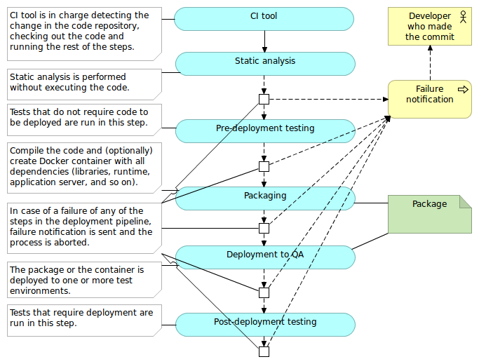Continuous deployment
Continuous delivery process
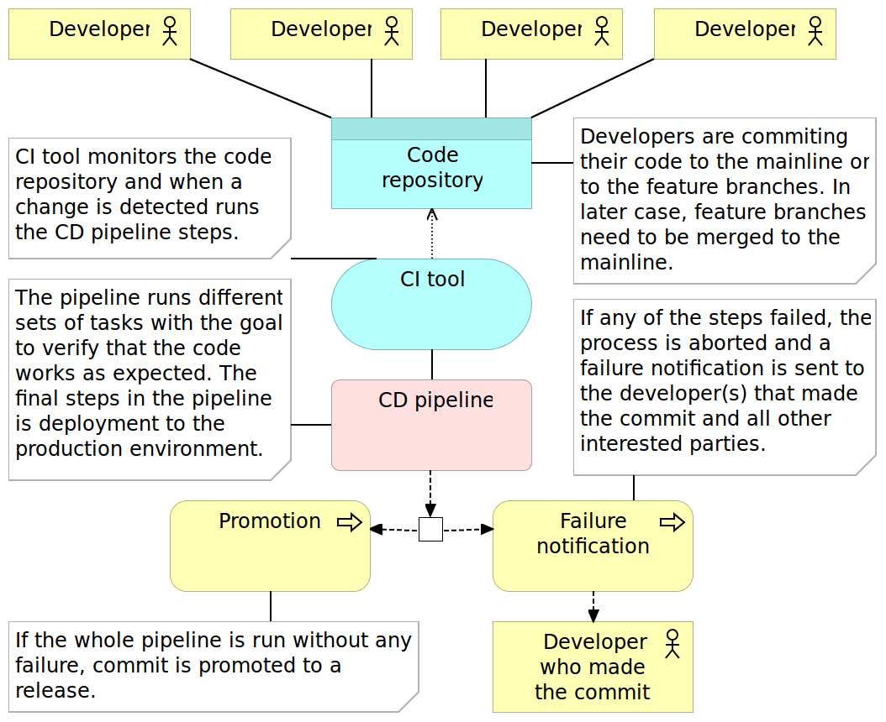
Continuous deployment
Continuous deployment pipeline
Containers (Docker)
Shipping container is an object for holding or transporting something

- Isolated
- Immutable
- Reliable
- Self-sufficient
- Scalable
Containers (Docker)
VMs vs Containers
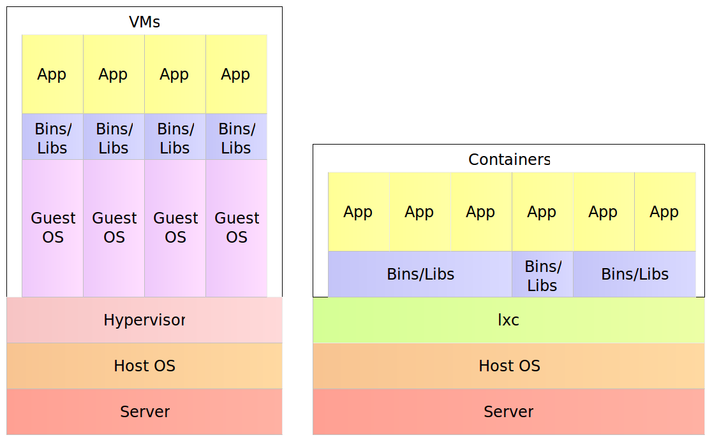Containers (Docker)
Self-sufficient container
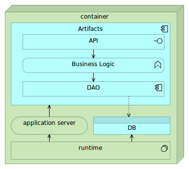Containers (Docker)
Container with the separate DB

Containers (Docker)
Containers with the shared DB

Monolithic applications
- Single unit
- Time increases complexity and size
- Time decreases development, testing and deployment speed
- Layers
- Change is hard and with risks
- Scaling = multiplication of the entire application
Monolithic applications
Early

Monolithic applications
Later
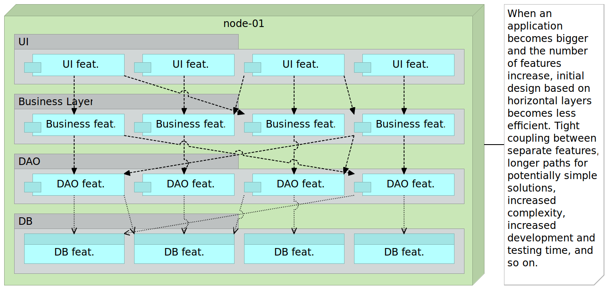Monolithic applications
Scaling

Microservices
Applications that fit into a screen
- System composed of small services
- Autonomy/independence
- Data exchange through APIs
- Bounded context
Microservices
Self-Sufficiency
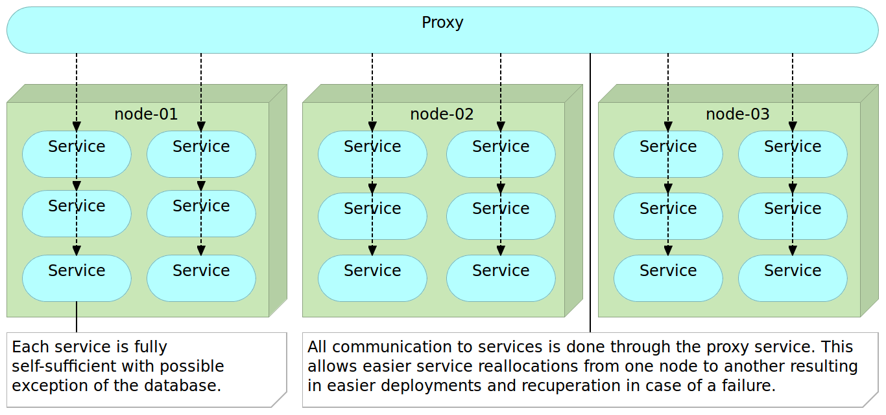Microservices
Gartner
Microservices are simpler, developers get more productive and systems can be scaled quickly and precisely, rather than in large monolithic globs. And I haven’t even mentioned the potential for polyglot coding and data persistence.- Gary Olliffe
Microservices
Object-Oriented Design
The big idea is 'messaging'. The key in making great and growable systems is much more to design how its modules communicate rather than what their internal properties and behaviors should be.- Alan Kay
Microservices
Single Responsibility Principle
Gather together those things that change for the same reason, and separate those things that change for different reasons- Robert C. Martin
Microservices
Linux = Microservices
ps aux | grep jav[a] | awk '{print $2}' | xargs kill
Microservices
- One thing or one functionality
- Any tools or languages
- Truly loosely coupled
- Teams independence
- Easier testing and CD
- Decentralization
Microservices
Disadvantages
- Increased operational and deployment complexity
- Configuration Management
- Containers (Docker)
- Work shifted from development to DevOps
- Remote process calls
Microservices
Advantages
- Scaling
- Resilience / fault isolation
- Innovation
- Size
- Decoupling
- Deployment
- No need for long term commitment
Microservices
Best Practices
- Containers (Docker)
- Reverse proxy
- Minimalist approach
- CM is a must
- Cross functional teams
- API versioning
Deployment
- Big vs small
- Mutable vs immutable
Deployment
Mutable Monster Server

Deployment
Immutable Server

Deployment
Immutable Server

Deployment
Immutable Server

Deployment
Immutable Server
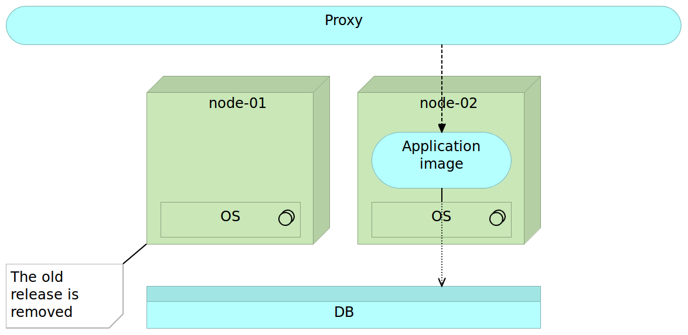
Deployment
Immutable Micro Services

Deployment
Immutable Micro Services
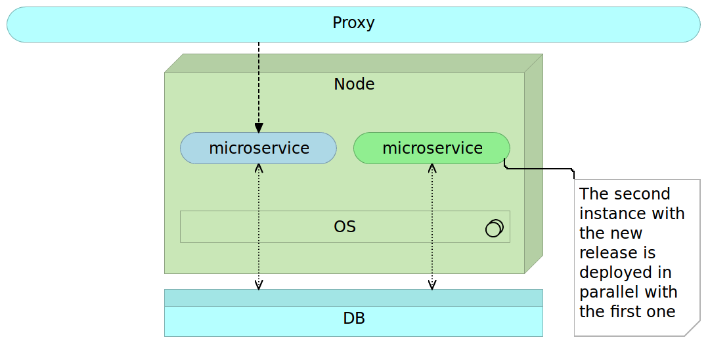
Deployment
Immutable Micro Services

Deployment
Immutable Micro Services

Development Environment
- Vagrant
- Docker
Development Environment
Create Virtual Machine
Please skip the first two steps if you followed the workshop preparation instructions.
git clone https://github.com/vfarcic/books-ms.git
vagrant plugin install vagrant-cachier
cd books-ms
Development Environment
Vagrantfile
cat Vagrantfile
vagrant up dev
Development Environment
Inside the Virtual Machine
vagrant ssh dev
ansible --version
docker --version
docker-compose --version
cd /vagrant
ll
Development Environment
Front-end tests
sudo docker run -it --rm \
-v $PWD/client/components:/source/client/components \
-v $PWD/client/test:/source/client/test \
-v $PWD/src:/source/src \
-v $PWD/target:/source/target \
-p 8080:8080 \
--env TEST_TYPE=watch-front \
vfarcic/books-ms-tests
Press CTRL+c to stop the container.
Development Environment
Tests with Docker Compose
sudo docker-compose -f docker-compose-dev.yml run feTestsLocal
sudo docker-compose -f docker-compose-dev.yml run testsLocal
Development Environment
What did we do?
- Installed Chrome, Firefox, MongoDB, NodeJS, Git, sbt, JDK, Scala, npm and gulp
- Downloaded Java/Scala dependencies through sbt
- Downloaded JavaScript dependencies through npm and bower
- Run MongoDB
- Run Scala tests
- Run JS tests
- Compiled Scala code
Development Environment
Stop the VM
exit
vagrant halt dev
Deployment Pipeline
- Checkout the code
- Run pre-deployment tests
- Compile and/or package the code
- Build the container
- Push the container to the registry
- Deploy the container to the production server
- Integrate the container
- Run post-deployment tests
- Push the tests container to the registry

Deployment Pipeline: Initial Stages
Creating the CD VM
Please skip the git clone step if you followed the workshop preparation instructions.
cd ..
git clone https://github.com/vfarcic/ms-lifecycle.git
cd ms-lifecycle
vagrant up cd --provision
vagrant ssh cd
Deployment Pipeline: Initial Stages
Checking out the code
Please skip the git clone step if you followed the workshop preparation instructions.
git clone https://github.com/vfarcic/books-ms.git
cd books-ms
Deployment Pipeline: Initial Stages
Running pre-deployment tests and compiling and/or packaging the code
sudo docker build \
-f Dockerfile.test \
-t 10.100.198.200:5000/books-ms-tests \
.
sudo docker-compose \
-f docker-compose-dev.yml \
run --rm tests
ll target/scala-2.10/
Deployment Pipeline: Initial Stages
Building Docker containers
cat Dockerfile
sudo docker build -t 10.100.198.200:5000/books-ms .
Deployment Pipeline: Initial Stages
Running containers (Docker)
Docker
sudo docker run -d --name books-db mongo
sudo docker run -d --name books-ms \
-p 8080:8080 \
--link books-db:db \
10.100.198.200:5000/books-ms
sudo docker exec -it books-ms bash
env | grep DB
exit
sudo docker ps -a
sudo docker logs books-ms
sudo docker rm -f books-ms books-db
sudo docker ps -a
Deployment Pipeline: Initial Stages
Running containers
Docker Compose
sudo docker-compose -f docker-compose-dev.yml up -d app
cat docker-compose-dev.yml
sudo docker-compose ps
sudo docker ps -a
sudo docker logs booksms_app_1
Deployment Pipeline: Initial Stages
Running containers
cURL
curl -H 'Content-Type: application/json' -X PUT -d \
'{"_id": 1,
"title": "My First Book",
"author": "John Doe",
"description": "Not a very good book"}' \
http://localhost:8080/api/v1/books | jq '.'
curl -H 'Content-Type: application/json' -X PUT -d \
'{"_id": 2,
"title": "My Second Book",
"author": "John Doe",
"description": "Not a bad as the first book"}' \
http://localhost:8080/api/v1/books | jq '.'
curl -H 'Content-Type: application/json' -X PUT -d \
'{"_id": 3,
"title": "My Third Book",
"author": "John Doe",
"description": "Failed writers club"}' \
http://localhost:8080/api/v1/books | jq '.'
curl http://localhost:8080/api/v1/books | jq '.'
curl http://localhost:8080/api/v1/books/_id/1 | jq '.'
sudo docker rm -f booksms_app_1 booksms_db_1
Deployment Pipeline: Initial Stages
Pushing containers to the registry
sudo docker push 10.100.198.200:5000/books-ms
exit
Deployment Pipeline: Initial Stages
Checklist
-
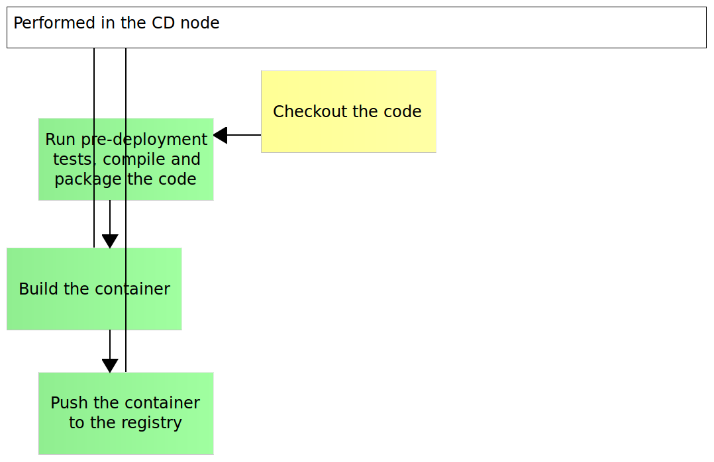
Checkout the codeRun pre-deployment testsCompile and/or package the codeBuild the containerPush the container to the registry- Deploy the container to the production server
- Integrate the container
- Run post-deployment tests
- Push the tests container to the registry
Configuration Management in the Docker World

|

|

|

|
Configuration Management in the Docker World
Configuring the Production Environment
vagrant up prod --provision
vagrant ssh cd
cd /vagrant/ansible
ansible-playbook prod.yml -i hosts/prod
Configuration Management in the Docker World
Production environment Ansible playbook
cat prod.yml
cat roles/docker/tasks/main.yml
cat roles/docker-compose/tasks/main.yml
cat hosts/prod
exit
Deployment Pipeline: Intermediate Stages
Checkout the codeRun pre-deployment testsCompile and/or package the codeBuild the containerPush the container to the registry- Deploy the container to the production server
- Integrate the container
- Run post-deployment tests
- Push the tests container to the registry
Deployment Pipeline: Intermediate Stages
Deploying containers to the production server
vagrant ssh prod
wget https://raw.githubusercontent.com/vfarcic\
/books-ms/master/docker-compose.yml
cat docker-compose.yml
sudo docker-compose up -d app
sudo docker ps
Deployment Pipeline: Intermediate Stages
Post-deployment verification
sudo docker inspect vagrant_app_1
PORT=$(sudo docker inspect \
--format='{{(index (index .NetworkSettings.Ports "8080/tcp") 0).HostPort}}' \
vagrant_app_1)
echo $PORT
curl -H 'Content-Type: application/json' -X PUT -d \
"{\"_id\": 1,
\"title\": \"My First Book\",
\"author\": \"John Doe\",
\"description\": \"Not a very good book\"}" \
http://localhost:$PORT/api/v1/books | jq '.'
curl -H 'Content-Type: application/json' -X PUT -d \
"{\"_id\": 2,
\"title\": \"My Second Book\",
\"author\": \"John Doe\",
\"description\": \"Not a bad as the first book\"}" \
http://localhost:$PORT/api/v1/books | jq '.'
curl -H 'Content-Type: application/json' -X PUT -d \
"{\"_id\": 3,
\"title\": \"My Third Book\",
\"author\": \"John Doe\",
\"description\": \"Failed writers club\"}" \
http://localhost:$PORT/api/v1/books | jq '.'
curl http://localhost:$PORT/api/v1/books | jq '.'
curl http://localhost:$PORT/api/v1/books/_id/1 | jq '.'
Deployment Pipeline: Intermediate Stages
Stopping Production Node
exit
vagrant halt prod
Deployment Pipeline: Intermediate Stages
Checklist
-
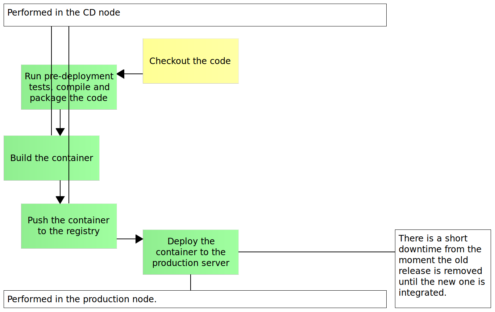
Checkout the codeRun pre-deployment testsCompile and/or package the codeBuild the containerPush the container to the registryDeploy the container to the production server- Integrate the container
- Run post-deployment tests
- Push the tests container to the registry
Service Discovery

Service Discovery
Single node

Service Discovery
Multiple nodes

Service Discovery
Service Discovery Elements
- Service registry
- Service registration
- Service discovery
Service Discovery
Tools
- Manual configuration
- Zookeeper
- etcd / Registrator / confd
Service Discovery
Consul Ansible playbook
vagrant up serv-disc-01 serv-disc-02 serv-disc-03
vagrant ssh cd
cat /vagrant/ansible/hosts/serv-disc
cat /vagrant/ansible/roles/consul/tasks/main.yml
cat /vagrant/ansible/roles/consul/defaults/main.yml
cat /vagrant/ansible/host_vars/10.100.194.201
cat /vagrant/ansible/consul.yml
Service Discovery
Setting up Consul
ansible-playbook \
/vagrant/ansible/consul.yml \
-i /vagrant/ansible/hosts/serv-disc
curl 10.100.194.201:8500/v1/catalog/nodes \
| jq '.'
Service Discovery
Consul

Service Discovery
Key/value store: PUT
curl -X PUT -d 'this is a test' \
http://10.100.194.201:8500/v1/kv/msg1
curl -X PUT -d 'this is another test' \
http://10.100.194.202:8500/v1/kv/messages/msg2
curl -X PUT -d 'this is a test with flags' \
http://10.100.194.203:8500/v1/kv/messages/msg3?flags=1234
Service Discovery
Key/value store: GET/DELETE
curl http://10.100.194.203:8500/v1/kv/?recurse \
| jq '.'
curl http://10.100.194.202:8500/v1/kv/msg1 \
| jq '.'
curl http://10.100.194.201:8500/v1/kv/msg1?raw
curl -X DELETE http://10.100.194.201:8500/v1/kv/messages/msg2
curl http://10.100.194.203:8500/v1/kv/?recurse \
| jq '.'
curl -X DELETE http://10.100.194.202:8500/v1/kv/?recurse
curl http://10.100.194.203:8500/v1/kv/?recurse \
| jq '.'
Service Discovery
Registrator Ansible playbook
cat /vagrant/ansible/roles/registrator/tasks/main.yml
cat /vagrant/ansible/roles/registrator/defaults/main.yml
Service Discovery
Setting up Registrator
ansible-playbook \
/vagrant/ansible/registrator.yml \
-i /vagrant/ansible/hosts/serv-disc
Service Discovery
Consul / Registrator

Service Discovery
Registering service
exit # Exit cd
vagrant ssh serv-disc-01
sudo docker run -d --name nginx \
--env SERVICE_NAME=nginx \
--env SERVICE_ID=nginx \
-p 1234:80 \
nginx
curl http://10.100.194.201:8500/v1/catalog/service/nginx \
| jq '.'
Service Discovery
Registering service again
exit
vagrant ssh serv-disc-02
sudo docker run -d --name nginx2 \
--env "SERVICE_ID=nginx2" \
--env "SERVICE_NAME=nginx" \
--env "SERVICE_TAGS=balancer,proxy,www" \
-p 1111:80 \
nginx
curl http://localhost:8500/v1/catalog/service/nginx \
| jq '.'
Service Discovery
Consul Template Ansible playbook
exit
vagrant ssh cd
cat /vagrant/ansible/roles/consul-template/tasks/main.yml
cat /vagrant/ansible/consul-template.yml
Service Discovery
Setting Up Consul Template
ansible-playbook \
/vagrant/ansible/consul-template.yml \
-i /vagrant/ansible/hosts/serv-disc
Service Discovery
Consul / Registrator / Consul Template

Service Discovery
Running Consul Template
exit # Exit cd node
vagrant ssh serv-disc-01 # Enter serv-disc-01
curl http://localhost:8500/v1/catalog/service/nginx \
| jq '.'
cat /data/consul-template/example.ctmpl
consul-template \
-consul localhost:8500 \
-template "/data/consul-template/example.ctmpl:/tmp/example.conf" \
-once
cat /tmp/example.conf
Service Discovery
Cleanup
exit # Exit cd node
vagrant halt serv-disc-01 serv-disc-02 serv-disc-03
Proxy Service
Proxy Service
nginx Ansible Playbook
vagrant up proxy
vagrant ssh cd
cat /vagrant/ansible/nginx.yml
cat /vagrant/ansible/roles/nginx/tasks/main.yml
cat /vagrant/ansible/roles/nginx/defaults/main.yml
cat /vagrant/ansible/roles/nginx/files/services.conf
ansible-playbook /vagrant/ansible/nginx.yml \
-i /vagrant/ansible/hosts/proxy
exit
vagrant ssh proxy
sudo docker ps
ps aux | grep consul
Proxy Service
Services Without Proxy
wget https://raw.githubusercontent.com/vfarcic\
/books-ms/master/docker-compose.yml
cat docker-compose.yml
sudo docker-compose up -d app
curl http://localhost/api/v1/books
sudo docker ps | grep books
PORT=$(sudo docker inspect \
--format='{{(index (index .NetworkSettings.Ports "8080/tcp") 0).HostPort}}' \
vagrant_app_1)
echo $PORT
curl http://localhost:$PORT/api/v1/books \
| jq '.'
Proxy Service
Services Without Proxy

Proxy Service
Manually Setting Proxy
echo "
location /api/v1/books {
proxy_pass http://10.100.193.200:$PORT/api/v1/books;
}
" | sudo tee /data/nginx/includes/books-ms.conf
sudo docker kill -s HUP nginx
curl http://localhost/api/v1/books | jq '.'
curl -H 'Content-Type: application/json' -X PUT -d \
"{\"_id\": 1,
\"title\": \"My First Book\",
\"author\": \"John Doe\",
\"description\": \"Not a very good book\"}" \
http://localhost/api/v1/books | jq '.'
curl http://localhost/api/v1/books | jq '.'
Proxy Service
Manually Setting Proxy

Proxy Service
Configuring Proxy with Consul
sudo docker-compose scale app=2
sudo docker ps | grep books
sudo wget http://raw.githubusercontent.com/vfarcic\
/books-ms/master/nginx-includes.conf \
-O /data/nginx/includes/books-ms.conf
cat /data/nginx/includes/books-ms.conf
sudo wget http://raw.githubusercontent.com/vfarcic\
/books-ms/master/nginx-upstreams.ctmpl \
-O /data/nginx/upstreams/books-ms.ctmpl
cat /data/nginx/upstreams/books-ms.ctmpl
sudo consul-template \
-consul localhost:8500 \
-template "/data/nginx/upstreams/books-ms.ctmpl:\
/data/nginx/upstreams/books-ms.conf:\
docker kill -s HUP nginx" \
-once
cat /data/nginx/upstreams/books-ms.conf
curl http://localhost/api/v1/books | jq '.'
curl http://localhost/api/v1/books | jq '.'
curl http://localhost/api/v1/books | jq '.'
curl http://localhost/api/v1/books | jq '.'
sudo docker logs nginx
Proxy Service
Configuring Proxy with Consul

Proxy Service
Proxy Failover
sudo docker stop vagrant_app_2
curl http://localhost/api/v1/books | jq '.'
curl http://localhost/api/v1/books | jq '.'
curl http://localhost/api/v1/books | jq '.'
curl http://localhost/api/v1/books | jq '.'
sudo docker logs nginx
Proxy Service
Cleanup
exit
vagrant halt proxy
Deployment Pipeline: The Late Stages
Checkout the codeRun pre-deployment testsCompile and/or package the codeBuild the containerPush the container to the registryDeploy the container to the production server- Integrate the container
- Run post-deployment tests
- Push the tests container to the registry
Deployment Pipeline: The Late Stages
Provision Production
vagrant up prod
vagrant ssh cd
cd /vagrant/ansible
cat prod2.yml
ansible-playbook prod2.yml -i hosts/prod
exit
Deployment Pipeline: The Late Stages
Run Containers
vagrant ssh prod
sudo docker start vagrant_db_1
sudo docker start vagrant_app_1
curl 10.100.198.201:8500/v1/catalog/service/books-ms \
| jq '.'
Deployment Pipeline: The Late Stages
Update the Proxy Service
curl http://localhost/api/v1/books
sudo wget https://raw.githubusercontent.com/vfarcic\
/books-ms/master/nginx-includes.conf \
-O /data/nginx/includes/books-ms.conf
cat /data/nginx/includes/books-ms.conf
sudo wget https://raw.githubusercontent.com/vfarcic\
/books-ms/master/nginx-upstreams.ctmpl \
-O /data/nginx/upstreams/books-ms.ctmpl
cat /data/nginx/upstreams/books-ms.ctmpl
sudo consul-template \
-consul localhost:8500 \
-template "/data/nginx/upstreams/books-ms.ctmpl:\
/data/nginx/upstreams/books-ms.conf:\
docker kill -s HUP nginx" \
-once
cat /data/nginx/upstreams/books-ms.conf
curl http://localhost/api/v1/books \
| jq '.'
exit
Deployment Pipeline: The Late Stages
Run Integration Tests
vagrant ssh cd
curl http://10.100.198.201/api/v1/books \
| jq '.'
cd ~/books-ms
cat docker-compose-dev.yml
sudo docker-compose \
-f docker-compose-dev.yml \
run --rm \
-e DOMAIN=http://10.100.198.201 \
integ
sudo docker push 10.100.198.200:5000/books-ms-tests
Automating the Deployment Pipeline
Clean Up
exit
cd ~
sudo docker-compose stop app db
sudo docker-compose rm -f app db
Deployment Pipeline: The Late Stages
Checklist
Checkout the codeRun pre-deployment testsCompile and/or package the codeBuild the containerPush the container to the registryDeploy the container to the production serverIntegrate the containerRun post-deployment testsPush the tests container to the registry
Deployment Pipeline: The Late Stages
Problems
Not automatedDowntimeNot scalableNot failure tollerantDifficult to monitor
Automating the Deployment Pipeline
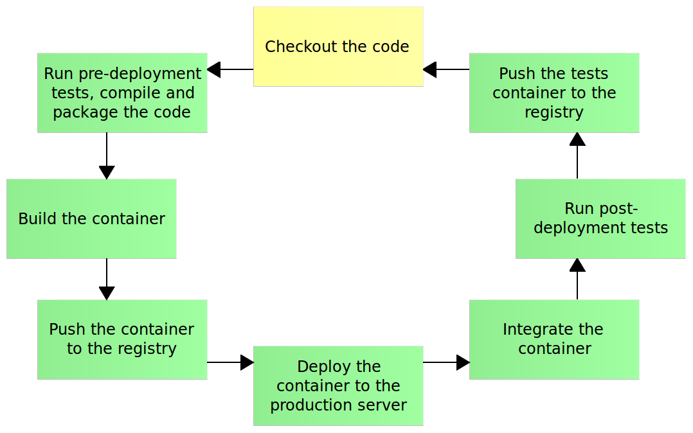Automating the Deployment Pipeline
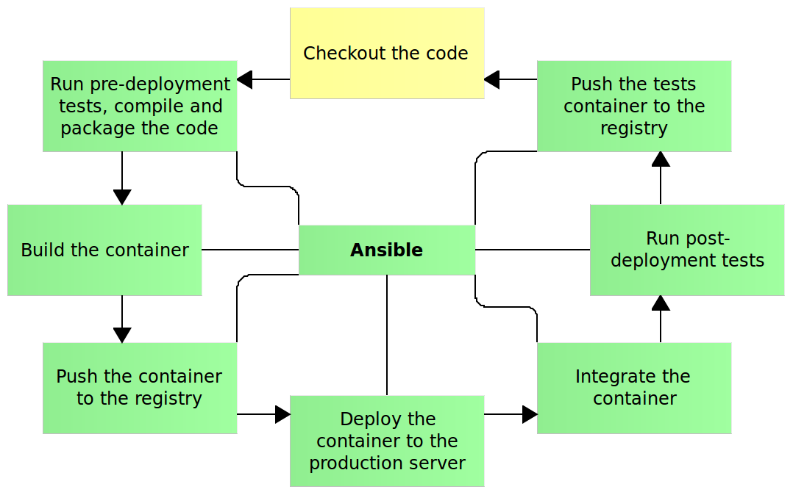Automating the Deployment Pipeline

Automating the Deployment Pipeline
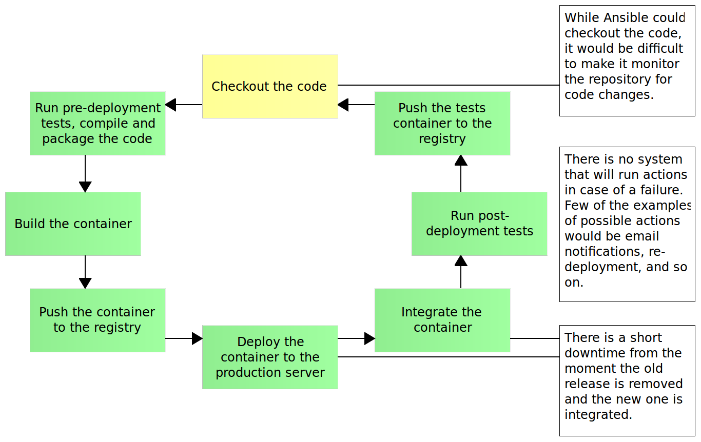Automating the Deployment Pipeline
Checking Out the Code
vagrant ssh cd
cd ~/books-ms
sudo git pull
Automating the Deployment Pipeline
Ansible Playbook
cat /vagrant/ansible/service.yml
cat /vagrant/ansible/roles/service/tasks/main.yml
cat /vagrant/ansible/roles/service/tasks/pre-deployment.yml
cat /vagrant/ansible/roles/service/tasks/deployment.yml
cat /vagrant/ansible/roles/service/defaults/main.yml
cat /vagrant/ansible/roles/service/tasks/post-deployment.yml
cat /vagrant/ansible/group_vars/all
Automating the Deployment Pipeline
Running the Deployment Pipeline
cd ~/books-ms
ansible-playbook /vagrant/ansible/service.yml \
-i /vagrant/ansible/hosts/prod \
--extra-vars "repo_dir=$PWD service_name=books-ms" \
-vvvv
Automating the Deployment Pipeline
Clean Up
exit
vagrant ssh prod
cd /data/books-ms
sudo docker-compose stop app db
sudo docker-compose rm -f app db
exit
Blue-Green Deployment
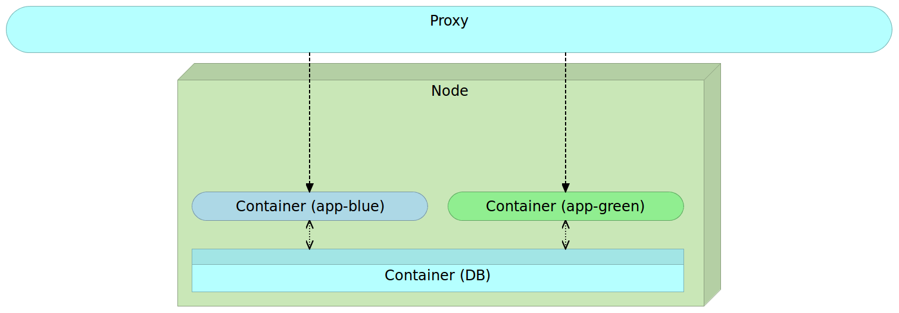
Blue-Green Deployment
Deploy Blue
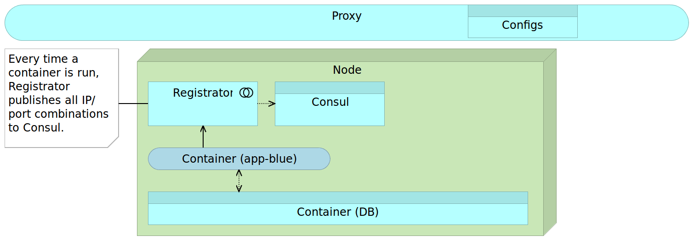Blue-Green Deployment
Integrate Blue

Blue-Green Deployment
Deploy Green

Blue-Green Deployment
Integrate Green

Blue-Green Deployment
Remove Blue
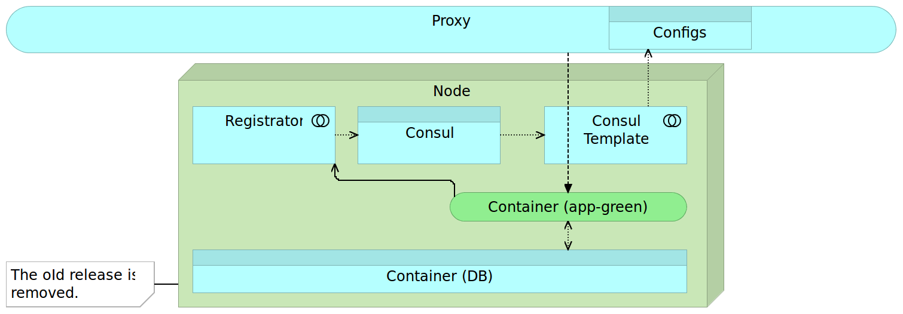Blue-Green Deployment
Get the Current Color
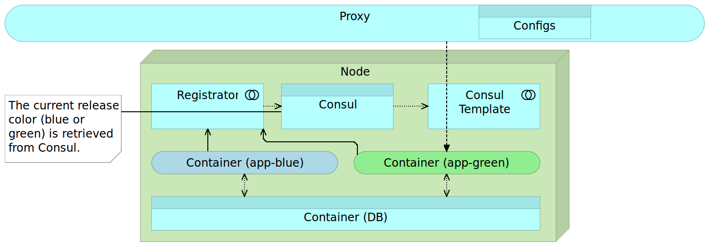Blue-Green Deployment
Put the Current Color
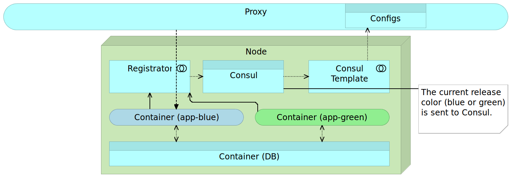Blue-Green Deployment
Combinations
- The First Run
- After the First Run
- Pre-deployment tests failed
- Pre-integration tests failed
- Post-integration tests failed
Blue-Green Deployment
The Flow
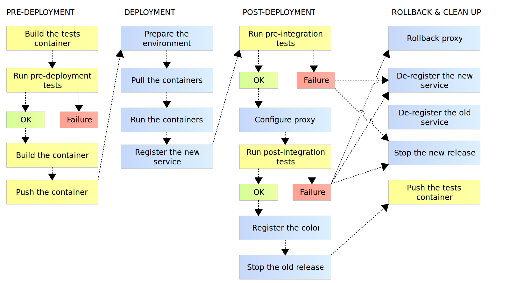Blue-Green Deployment
Playbook
vagrant ssh cd
cat /vagrant/ansible/service-bg.yml
cat /vagrant/ansible/roles/service-bg/tasks/main.yml
cat /vagrant/ansible/roles/service-bg/tasks/pre-deployment.yml
cat /vagrant/ansible/roles/service-bg/tasks/deployment.yml
cat /vagrant/ansible/roles/service-bg/tasks/copy.yml
cat /vagrant/ansible/roles/service-bg/defaults/main.yml
cat /vagrant/ansible/roles/service-bg/files/get-color.sh
cat /vagrant/ansible/roles/service-bg/tasks/post-deployment.yml
cat /vagrant/ansible/roles/service-bg/tasks/nginx.yml
cat /vagrant/ansible/roles/service-bg/tasks/rollback.yml
cat /vagrant/ansible/roles/service-bg/tasks/main.yml
Blue-Green Deployment
Running the Playbook
cd ~/books-ms
ansible-playbook /vagrant/ansible/service-bg.yml \
-i /vagrant/ansible/hosts/prod \
--extra-vars "repo_dir=$PWD service_name=books-ms" \
--skip-tags "build,push,pull" \
-vv
curl 10.100.198.201:8500/v1/catalog/services \
| jq '.'
curl http://10.100.198.201:8500/v1/kv/books-ms/color?raw
curl 10.100.198.201/api/v1/books | jq '.'
Blue-Green Deployment
Failing Pre-Deployment Tests
ansible-playbook /vagrant/ansible/service-bg.yml \
-i /vagrant/ansible/hosts/prod \
--extra-vars "repo_dir=$PWD service_name=books-ms fail_pre_deployment_tests=true" \
--skip-tags "build,push,pull" \
-vv
curl 10.100.198.201:8500/v1/catalog/services \
| jq '.'
curl http://10.100.198.201:8500/v1/kv/books-ms/color?raw
curl 10.100.198.201/api/v1/books | jq '.'
Blue-Green Deployment
Failing Pre-Integration Tests
ansible-playbook /vagrant/ansible/service-bg.yml \
-i /vagrant/ansible/hosts/prod \
--extra-vars "repo_dir=$PWD service_name=books-ms proxy_url=http://1.2.3.4" \
--skip-tags "build,push,pull" \
-vv
curl 10.100.198.201:8500/v1/catalog/services \
| jq '.'
curl http://10.100.198.201:8500/v1/kv/books-ms/color?raw
curl 10.100.198.201/api/v1/books | jq '.'
Blue-Green Deployment
Failing Post-Integration Tests
ansible-playbook /vagrant/ansible/service-bg.yml \
-i /vagrant/ansible/hosts/prod \
--extra-vars "repo_dir=$PWD service_name=books-ms proxy_url2=http://1.2.3.4" \
--skip-tags "build,push,pull" \
-vv
curl 10.100.198.201:8500/v1/catalog/services \
| jq '.'
curl http://10.100.198.201:8500/v1/kv/books-ms/color?raw
curl 10.100.198.201/api/v1/books | jq '.'
Blue-Green Deployment
Cleaning Up
exit
halt prod
Clustering And Scaling Services


Clustering And Scaling Services
Tools
- Kubernetes
- Mesos DCOS
Clustering And Scaling Services
Service Discovery

Clustering And Scaling Services
Master and Nodes

Clustering And Scaling Services
Deploying the First Container
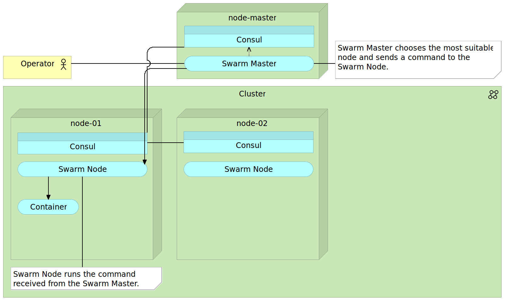Clustering And Scaling Services
The Second Container

Clustering And Scaling Services
All Nodes Full
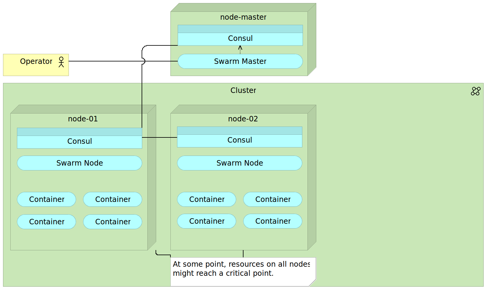Clustering And Scaling Services
Adding a New Node

Clustering And Scaling Services
Failed Node

Clustering And Scaling Services
Setting Up Docker Swarm
vagrant up swarm-master swarm-node-1 swarm-node-2
vagrant ssh cd
ansible-playbook /vagrant/ansible/swarm.yml \
-i /vagrant/ansible/hosts/prod \
-vv
cat /vagrant/ansible/swarm.yml
cat /vagrant/ansible/roles/swarm/tasks/main.yml
export DOCKER_HOST=tcp://10.100.192.200:2375
docker info
docker ps -a
Clustering And Scaling Services
Deploying with Docker Swarm
cd ~/books-ms
docker-compose up -d app
docker-compose ps
docker ps -a | grep books
curl 10.100.192.200:8500/v1/catalog/services \
| jq '.'
curl 10.100.192.200:8500/v1/catalog/service/books-ms \
| jq '.'
Clustering and Scaling Services
Testing Deployments with Docker Swarm
BOOKS_MS_ADDRESS=`curl \
10.100.192.200:8500/v1/catalog/service/books-ms \
| jq '.[0].Address'`
BOOKS_MS_PORT=`curl \
10.100.192.200:8500/v1/catalog/service/books-ms \
| jq '.[0].ServicePort'`
BOOKS_MS_HOST=${BOOKS_MS_ADDRESS//\"}:${BOOKS_MS_PORT}
echo $BOOKS_MS_HOST
curl -H 'Content-Type: application/json' -X PUT -d \
'{"_id": 1,
"title": "My First Book",
"author": "John Doe",
"description": "Not a very good book"}' \
$BOOKS_MS_HOST/api/v1/books | jq '.'
curl $BOOKS_MS_HOST/api/v1/books
docker-compose stop app db
docker-compose rm -f app db
docker ps -a
Clustering and Scaling Services
Deploying with Docker Swarm to the Cluster
cat docker-compose-swarm.yml
docker-compose -f docker-compose-swarm.yml up -d db app
curl 10.100.192.200:8500/v1/catalog/services \
| jq '.'
curl 10.100.192.200:8500/v1/catalog/service/books-db \
| jq '.'
Clustering And Scaling Services
Testing Deployment with Docker Swarm to the Cluster
curl 10.100.192.200:8500/v1/catalog/services \
| jq '.'
curl 10.100.192.200:8500/v1/catalog/service/books-ms \
| jq '.'
docker ps | grep booksms
BOOKS_MS_ADDRESS=`curl \
10.100.192.200:8500/v1/catalog/service/books-ms \
| jq '.[0].Address'`
BOOKS_MS_PORT=`curl \
10.100.192.200:8500/v1/catalog/service/books-ms \
| jq '.[0].ServicePort'`
BOOKS_MS_HOST=${BOOKS_MS_ADDRESS//\"}:${BOOKS_MS_PORT}
echo $BOOKS_MS_HOST
curl -H 'Content-Type: application/json' -X PUT -d \
'{"_id": 2,
"title": "My Second Book",
"author": "John Doe",
"description": "A bit better book"}' \
$BOOKS_MS_HOST/api/v1/books | jq '.'
curl $BOOKS_MS_HOST/api/v1/books | jq '.'
Clustering And Scaling Services
Scaling Services with Docker Swarm
docker-compose -f docker-compose-swarm.yml scale app=2
docker ps | grep booksms
BOOKS_MS_ADDRESS=`curl \
10.100.192.200:8500/v1/catalog/service/books-ms \
| jq '.[0].Address'`
BOOKS_MS_PORT=`curl \
10.100.192.200:8500/v1/catalog/service/books-ms \
| jq '.[0].ServicePort'`
BOOKS_MS_HOST=${BOOKS_MS_ADDRESS//\"}:${BOOKS_MS_PORT}
echo $BOOKS_MS_HOST
curl $BOOKS_MS_HOST/api/v1/books | jq '.'
BOOKS_MS_ADDRESS=`curl \
10.100.192.200:8500/v1/catalog/service/books-ms \
| jq '.[1].Address'`
BOOKS_MS_PORT=`curl \
10.100.192.200:8500/v1/catalog/service/books-ms \
| jq '.[1].ServicePort'`
BOOKS_MS_HOST=${BOOKS_MS_ADDRESS//\"}:${BOOKS_MS_PORT}
echo $BOOKS_MS_HOST
curl $BOOKS_MS_HOST/api/v1/books | jq '.'
Clustering And Scaling Services
Descaling Services with Docker Swarm
docker-compose -f docker-compose-swarm.yml scale app=1
docker ps | grep booksms
BOOKS_MS_ADDRESS=`curl \
10.100.192.200:8500/v1/catalog/service/books-ms \
| jq '.[0].Address'`
BOOKS_MS_PORT=`curl \
10.100.192.200:8500/v1/catalog/service/books-ms \
| jq '.[0].ServicePort'`
BOOKS_MS_HOST=${BOOKS_MS_ADDRESS//\"}:${BOOKS_MS_PORT}
echo $BOOKS_MS_HOST
curl $BOOKS_MS_HOST/api/v1/books | jq '.'
Clustering And Scaling Services
Cleaning Up
docker-compose -f docker-compose-swarm.yml stop app db
docker-compose -f docker-compose-swarm.yml rm -f app db
docker ps -a
Clustering And Scaling Services
Examining the Swarm Deployment Playbook
cat /vagrant/ansible/service-swarm.yml
cat /vagrant/ansible/roles/service-swarm/tasks/main.yml
cat /vagrant/ansible/roles/service-swarm/tasks/pre-deployment.yml
cat /vagrant/ansible/roles/service-swarm/tasks/deployment.yml
cat /vagrant/ansible/roles/service-swarm/tasks/nginx.yml
cat /vagrant/ansible/roles/service-swarm/tasks/post-deployment.yml
cat /vagrant/ansible/roles/service-swarm/tasks/rollback.yml
cat /vagrant/ansible/roles/service-swarm/tasks/main.yml
cat /vagrant/ansible/roles/service-swarm/tasks/copy.yml
cat /vagrant/ansible/roles/service-swarm/defaults/main.yml
cat /vagrant/ansible/roles/service-swarm/files/get-color.yml
cat /vagrant/ansible/roles/service-swarm/files/get-domain.yml
Clustering And Scaling Services
Running the Swarm Deployment Playbook
ansible-playbook /vagrant/ansible/service-swarm.yml \
-i /vagrant/ansible/hosts/prod \
--extra-vars "repo_dir=$PWD service_name=books-ms" \
-vv --skip-tags "build,pull,push"
curl 10.100.192.200:8500/v1/catalog/services \
| jq '.'
curl 10.100.192.200:8500/v1/catalog/service/books-db \
| jq '.'
curl 10.100.192.200:8500/v1/catalog/service/books-ms-blue \
| jq '.'
curl 10.100.192.200:8500/v1/kv/books-ms/color?raw
curl 10.100.192.200/api/v1/books | jq '.'
Clustering And Scaling Services
Scaling the Service With Ansible
ansible-playbook /vagrant/ansible/service-swarm.yml \
-i /vagrant/ansible/hosts/prod \
--extra-vars "repo_dir=$PWD service_name=books-ms" \
--skip-tags "build,pull" --extra-vars "scale_service=2" -vv
curl 10.100.192.200:8500/v1/catalog/services \
| jq '.'
curl 10.100.192.200:8500/v1/catalog/service/books-ms-green \
| jq '.'
curl http://10.100.192.200:8500/v1/kv/books-ms/color?raw
curl 10.100.192.200/api/v1/books | jq '.'
exit
CI Tools
- GoCD
- Bamboo
- Travis
- CircleCI
- Shippable
CI Tools
Jenkins Setup
vagrant ssh cd
ansible-playbook /vagrant/ansible/jenkins.yml \
-c local \
-vv
cat /vagrant/ansible/jenkins.yml
cat /vagrant/ansible/roles/java/tasks/main.yml
cat /vagrant/ansible/roles/jenkins/tasks/main.yml
cat /vagrant/ansible/roles/jenkins/templates/service-config.xml
CI Tools
Jenkins Setup: Git Plugin
- Click Manage Jenkins > Manage Plugins > Available
- Select GIT plugin
- Click Install without restart > Restart Jenkins when installation is complete and no jobs are running
CI Tools
Jenkins Setup: cd Node
- Click Manage Jenkins > Manage Nodes > New Node
- Type cd, click Dumb Slave > OK
- Type /data/jenkins_slaves/cd in the Remote root directory field
- Type 10.100.198.200 in the Host field
- Click the Add button on the left side of the Credentials label
- Type vagrant as both Username and Password
- Click the Add button
- Click the Save button
- Refresh the screen if the cd node is marked as failed.
Self-Healing Systems
- Application level
- System level
- Hardware level
Self-Healing Systems
System Level: Time-To-Live (TTL)

Self-Healing Systems
System Level: Pings

Self-Healing Systems
Check Types
- Preventive
- Reactive
Self-Healing Systems
Consul Health Checks
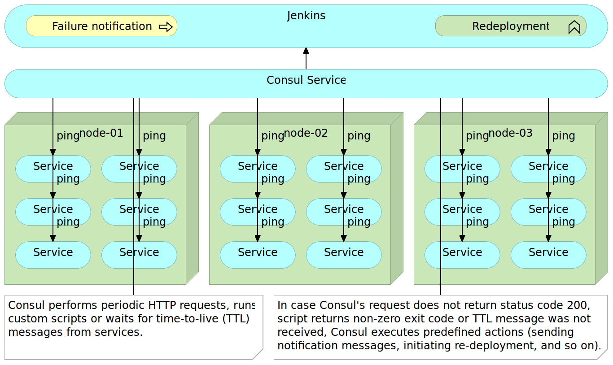Self-Healing Systems
Ansible Playbook
cat /vagrant/ansible/swarm-healing.yml
cat /vagrant/ansible/roles/consul-healing/tasks/main.yml
cat /vagrant/ansible/roles/consul-healing/defaults/main.yml
cat /vagrant/ansible/roles/consul-healing/files/consul_check.json
cat /vagrant/ansible/roles/consul-healing/files/mem.sh
cat /vagrant/ansible/roles/consul-healing/files/disk.sh
cat /vagrant/ansible/roles/consul-healing/templates/watchers.json
cat /vagrant/ansible/roles/consul-healing/templates/manage_critical.sh
cat /vagrant/ansible/roles/consul-healing/templates/manage_warning.sh
Self-Healing Systems
Ansible Playbook
ansible-playbook /vagrant/ansible/swarm-healing.yml \
-i /vagrant/ansible/hosts/swarm \
-vv
Open http://10.100.198.200:8080/job/service-redeploy/
Self-Healing Systems
Stop the Container
export DOCKER_HOST=tcp://10.100.192.200:2375
docker ps -a | grep books
curl 10.100.192.200:8500/v1/catalog/services \
| jq '.'
docker stop $(docker ps | grep booksms_app | awk '{ print $1}')
docker ps -a | grep books
curl 10.100.192.200:8500/v1/catalog/services \
| jq '.'
curl 10.100.192.200/api/v1/books | jq '.'
Open http://10.100.198.200:8080/job/service-redeploy/
Self-Healing Systems
Stop the Node
exit
vagrant halt swarm-node-2
Open http://10.100.198.200:8080/job/service-redeploy/
Self-Healing Systems
Check the Node
vagrant ssh cd
curl 10.100.192.200/api/v1/books | jq '.'
export DOCKER_HOST=tcp://10.100.192.200:2375
docker info
docker ps -a | grep books
curl 10.100.192.200:8500/v1/catalog/services \
| jq '.'
exit
Self-Healing Systems
Bring Up the Node
vagrant up swarm-node-2
vagrant ssh cd
ansible-playbook /vagrant/ansible/swarm-healing.yml \
-i /vagrant/ansible/hosts/swarm \
-vv
export DOCKER_HOST=tcp://10.100.192.200:2375
docker info
docker stop $(docker ps | grep booksms_app | awk '{ print $1}')
docker ps -a | grep books
curl 10.100.192.200:8500/v1/catalog/services \
| jq '.'
curl 10.100.192.200/api/v1/books | jq '.'
exit
Say Again
- over mutable deployments
- over big
- over manual procedures
- over predefined configuration
- over static
- over do-it-all tools